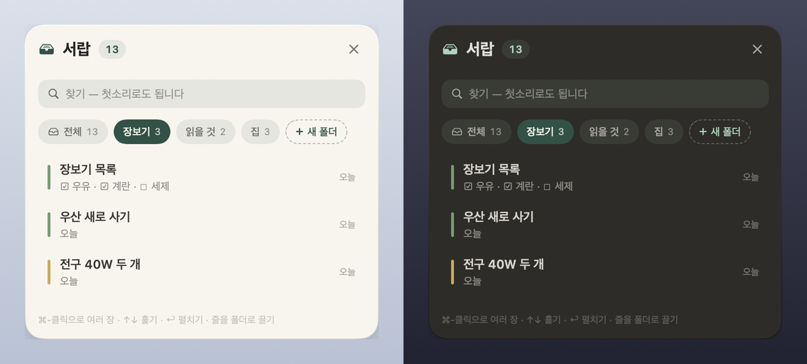

Why it looks this way
-
It never asks you to finish
Half-written, untitled, undated — those are the normal states here. There are no empty fields waiting to be filled, no reminders to fill them, and no Save button to forget.
-
Time is the only structure
A note on the desktop is never asked where it belongs. The calendar is something you handle — pick an entry up, drop it on another day, or push it back with a click. Folders exist only after you put a note away, inside the drawer.
-
Old things step aside on their own
A checklist you have finished and a date that has passed quietly leave the desktop for the drawer. Nothing is deleted — open the drawer and there they are, and one click brings them all back.
-
The app keeps out of your way
A note at rest is paper and letters, nothing else. The controls fade in over the content when your pointer arrives and fade out when it leaves. Nothing appears in the Dock or in Alt-Tab.
Screens

#photo, link and to-do filters sit right there.
Whatever you were typing survives a restart.


Drawer & folders
A small “Drawer N” tab sits in a corner of the desktop. A note goes in when you press its × or drag it onto the tab, and inside, the drawer is divided into named folders. Putting a note into a folder is putting it into the drawer; a note you take back out keeps its label, so it returns to the same folder next time.


folder: line
in the note's file, so Claude sees the same thing.How you use it
| ⌥⌘N | Quick capture, in a bubble below the menu bar icon. Typing also filters the notes you already have. The shortcut is yours to change in Menu → Settings. |
| ⌥⌘V | Paste straight to the desktop. Whatever you copied — text or a picture — becomes a new sheet without opening a window. |
| esc | Close. The box remembers what you were typing — through a restart and through an update. Reopen it and your words are still there, selected. |
| The × on a note | Puts it in the drawer. It does not delete it. Right-click the note to pick a folder as you put it away. |
| The red trash icon | Deletes — and the paper stays exactly where it was for eight seconds, holding an Undo. After that you still have thirty days. |
| The calendar icon | Puts an undated note on the calendar; if it already has a date, it shows you where that date lives. |
| In the drawer: ↑↓ Tab ⏎ | Walk the list, step to the next folder, unfold the row. ⌘⏎ takes a note out, ⌘⌫ deletes it, and esc backs out one layer at a time. |
Finished things retire by themselves. A list with every box ticked steps into the drawer three days after you last touched it, and a past appointment at the end of the following day. Neither is deleted — both stay in the files, in search and on the calendar. Notes you have pinned are never touched by this.
Your notes are files
If you ever remove lazymemo, your notes stay. The source of truth is a folder of Markdown files on your own Mac — open them in Finder, edit them in any text editor you like.
~/Documents/lazymemo/ notes/2026/09/01K3ZQ….md ← the original — the folder label is one line inside it .trash/ ← deleted notes, kept 30 days
Move that folder inside iCloud Drive and you have sync.
There is no backend to sign up for and nothing to configure — when you move the
folder, the app follows it (Menu → Settings). From an iPhone, a single Shortcut that
drops a .md into that folder is enough; the app adopts it.
Claude, if you would like it
lazymemo builds a small MCP server alongside the app. Register it and you can ask Claude Desktop things like “book the dentist for two o'clock next Tuesday”, “what is on this month?” or “put milk in the groceries folder”.
No API key is needed. Claude calls lazymemo rather than the other way around, so the token cost sits with your own Claude subscription. The integration is entirely optional and off until you register it yourself.
Because Claude is able to delete notes, we did not build a tool that
deletes permanently. This is wiring rather than policy — no hard-delete
function exists anywhere in the code the MCP server can reach. Deletion moves a
note to .trash/, and restoring it is a single call.
Privacy
The only route by which the text of your notes can leave your Mac is the MCP integration above, and it opens only when you register it yourself.
Two other things use the network — unfolding a link into a card (the address you pasted goes out, nothing else) and checking for a new version (one request to GitHub, without even the version number). Both can be switched off in Settings, and with them off the app contacts nothing at all.
This page keeps the same promise. It makes no outbound request of any kind — no trackers, no web fonts, no analytics — and the film above is served from the same place as the page. The deploy workflow checks that before publishing.
A note on language
The app's interface is currently in Korean only, and the screenshots above show it exactly as it ships today. If that is a problem for you, we are sorry — please treat this page as a description rather than a promise, and you are very welcome to open an issue to say so. This page is also available in 한국어.